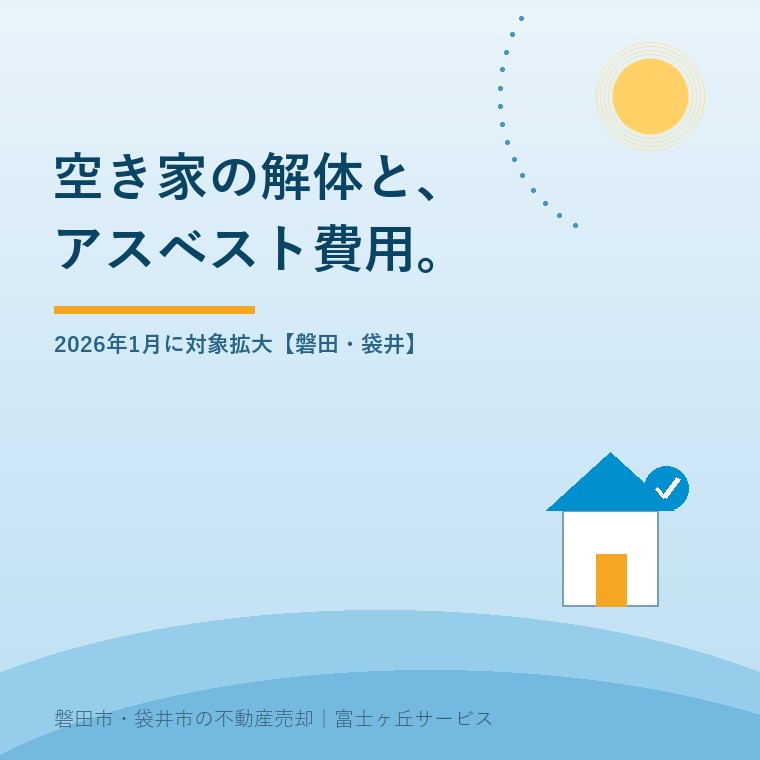

2026年8月26日｜カテゴリ：解体と費用／法令

この記事の要点
Q. 実家の解体で3社から見積りを取ったら、アスベストの費用が会社ごとにバラバラでした。何が違うんでしょうか。
A. 事前調査は石綿障害予防規則第3条で義務です。値上げの口実ではありません。ただし調査・分析・報告・除去のどこまでを見積りに入れるかは会社によって違います。2026年1月1日以降着工の工事から、工作物の調査にも資格者が要ります。
磐田市・袋井市・森町では、介護施設の運営から不動産事業を始めた富士ヶ丘サービスのような「介護×不動産」専門の会社に相談するという選択肢があります。
解体の見積りを3社から取ると、総額が数十万円違うことがあります。内訳を並べると、差の出どころはたいてい付帯物と石綿（アスベスト）です。磐田市と袋井市の実家を壊して売ろうとしている相続人の方から、この比べ方の相談をよく受けます。
この記事は2026年8月26日時点で、厚生労働省の石綿総合情報ポータルサイト「工作物石綿事前調査者」「改正ポイント」「石綿事前調査結果報告」「補助金制度」の各ページを確認して書いています。解体費そのものの相場は実家の解体費用はいくら？に、市の補助は磐田市の空き家解体補助と袋井市の空き家除却補助に書きました。ここでは石綿の費用が見積書のどこに乗るかだけを扱います。
石綿の事前調査に資格が要るようになる時期は、建築物と工作物で3年ずれています。厚生労働省の石綿総合情報ポータルサイトは、改正石綿則の施行時期をこう整理しています。
「建築物の事前調査は、厚生労働大臣が定める講習を修了した者等が行う必要があります。（令和5年（2023年）10月〜）」
「工作物の事前調査は、厚生労働大臣が定める講習を修了した者等が行う必要があります。（令和8年（2026年）1月〜）」（厚生労働省「改正ポイント」）
そして工作物のページには、適用の起点がはっきり書かれています。「令和8年1月1日以降着工の工事から、工作物の解体等の作業を行うときは、資格者による事前調査を行う必要があります。」基準は契約日ではなく着工日です。年内に契約して年明けに着工する工事は、新しいほうに当たります。
順序を整理すると、こうなります。
| 時期 | 変わったこと |
|---|---|
| 令和3年（2021年）4月〜 | 工事対象となる全ての材料について文書と目視で調査し、記録を3年間保存 |
| 令和4年（2022年）4月〜 | 一定規模以上の建築物や特定の工作物について、事前調査の結果等を電子システムで届出 |
| 令和5年（2023年）10月〜 | 建築物の事前調査は、講習を修了した者等が行う |
| 令和6年（2024年）4月〜 | 石綿等の切断等の作業で、湿潤化・除じん性能を有する電動工具の使用などの措置 |
| 令和8年（2026年）1月〜 | 工作物の事前調査は、講習を修了した者等が行う |
厚生労働省 石綿総合情報ポータルサイト「改正ポイント」「工作物石綿事前調査者」により作成。2026年8月26日確認。
つまり「2026年1月からアスベスト調査が始まる」わけではありません。木造住宅の解体で調査費が乗るようになったのは、もっと前の話です。2026年1月に増えるのは、敷地に工作物がある場合の資格要件です。
工作物という言葉は、建築物以外のものを広く指します。厚生労働省は次のように説明しています。
「『工作物』とは、建築物以外のものであって、土地、建築物又は工作物に設置されているもの又は設置されていたものの全てをいい、例えば、煙突、サイロ、鉄骨架構、上下水道管等の地下埋設物、化学プラント等、建築物内に設置されたボイラー、非常用発電設備、エレベーター、エスカレーター等……があります。」（令和2年10月28日付け基発1028第1号「石綿障害予防規則の解説について」より引用）
資格が要る対象は2段構えです。厚生労働大臣と環境大臣が定める特定工作物は17種類で、反応槽、加熱炉、ボイラー及び圧力容器、配管設備、焼却設備、貯蔵設備、発電設備、変電設備、配電設備、送電設備、煙突、トンネルの天井板、プラットホームの上家、遮音壁、軽量盛土保護パネル、鉄道の駅の地下式構造部分の壁及び天井板、観光用エレベーターの昇降路の囲いが挙げられています。
ここが私には意外でした。対象は特定工作物だけではありません。特定工作物以外の工作物も、「塗料その他の石綿等が使用されているおそれがある材料の除去等の作業に限る」という条件つきで対象に入っています。敷地の擁壁や門柱の塗膜をはがす作業まで、条文の射程に入っているということです。
ただし、除外もあります。配管設備は「建築物に設ける給水設備、排水設備、換気設備、暖房設備、冷房設備、排煙設備等の建築設備を除く」、煙突も「建築物に設ける排煙設備等の建築設備を除く」、発電設備は「太陽光発電設備及び風力発電設備を除く」とされています。屋根に載った太陽光は、特定工作物としての発電設備には当たりません。その売買での扱いは太陽光パネル付きの家を売却に書きました。
事前調査の結果は、一定の規模を超えると国に報告します。厚生労働省の石綿事前調査結果報告のページは、報告が必要な工事を次のように挙げています。
「解体部分の床面積の合計が80㎡以上の建築物の解体工事」
「請負金額が税込100万円以上の建築物の改修工事」
「請負金額が税込100万円以上の特定の工作物の解体または改修工事」
「総トン数が20トン以上の船舶（鋼製のものに限る）の解体又は改修工事」（厚生労働省「石綿事前調査結果報告」）
床面積80平方メートルは、約24坪です。木造の平屋でも、少し大きい家ならこの線を超えます。2階建てなら、まず該当します。磐田市と袋井市で私が扱う実家は、ほぼ全部が報告の対象に入る規模です。
報告は元請業者の仕事で、持ち主が自分で電子申請をする場面はありません。ただし報告に必要な情報を出すのは持ち主です。建てた年、増築の履歴、外壁を塗り替えたかどうか。ここが分からないと、調査する側は「不明」として扱い、分析に回す材料が増えます。
アスベストの調査と除去には、国の補助制度があります。厚生労働省のポータルサイトは、国土交通省の住宅・建築物アスベスト改修事業についてこう説明しています。
| 調査 | 除去等 | |
|---|---|---|
| 対象 | 吹付けアスベスト等が施工されているおそれのある住宅・建築物 | 吹付けアスベスト等が施工されている住宅・建築物 |
| 国の補助額 | 限度額は原則として25万円/棟 | 地方公共団体の補助額の1/2以内（かつ全体の1/3以内） |
| 補助対象の石綿 | 吹付けアスベスト、アスベスト含有吹付けロックウール | |
厚生労働省 石綿総合情報ポータルサイト「補助金制度」により作成。2026年8月26日確認。「補助制度がない地方公共団体もありますので、詳細はお住まいの地方公共団体にお問い合わせください」とされています。
この25万円という数字を、私は自分の商売の単位に置き換えて見ています。当社の記事で示している木造30坪の解体費の目安は90万〜180万円です。国が調査に置いた限度額25万円は、解体費の14％から28％に当たります。調査という言葉の軽さに比べて、想定されている額はかなり大きい。
ただし、ここには大きな但し書きがあります。補助の対象は吹付けアスベストとアスベスト含有吹付けロックウールだけです。一般的な木造住宅で問題になるのは、スレート屋根材や外壁のサイディング、内装のけい酸カルシウム板といった成形品です。成形品はこの補助の対象ではありません。25万円という数字は、多くの実家には当たらないと考えたほうが実際に近い。
ここからは私の意見です。石綿の分析結果に立ち会った手持ちの体験素材がないので、実話としてではなく、宅地建物取引士としての見積書の読み方としてお読みください。3社の見積りを並べられたとき、私は次の3行を探します。
3社の総額だけを比べても意味がありません。安い見積りは、たいてい「見つかったら別途」の範囲が広いだけです。調査を省ける制度にはなっていないので、後で必ず出てきます。数字を並べて、どの行が入っていてどの行が抜けているかを揃えてから比べる。それだけで、比較の意味が変わります。
正直に書きます。2026年1月からの工作物の資格要件が、木造住宅1軒の解体でどこまで効いてくるのか、私はまだ読み切れていません。敷地に古い煙突やボイラーがあれば当たるのは分かります。しかし、門柱の塗膜や擁壁がどこまで「除去等の作業」に当たるかは、工事の内容で変わります。ここは分からないと書いて、年明けの見積りを実際に見てから、あらためて書き直すつもりです。
制度への評価は、良い点から書きます。私は3つを評価しています。
注文も2つ書きます。批判ではなく、解体の見積りを毎月見ている一事業者からの報告です。
1つ目。調査費と分析費の水準が、持ち主の側から見えません。国は補助の限度額として25万円/棟という数字を出していますが、これは吹付けアスベストの調査を想定した額です。木造住宅の成形品の調査がいくらなのかを示す公表資料は、私には見つけられませんでした。目安が無いから、3社の見積りが3通りに見えるのに、高いのか安いのかを誰も判断できない。ここが一番困ります。
2つ目。補助の対象が吹付けに限られていることが、持ち主に伝わっていません。「アスベストの補助がある」と聞いて相談に来られる方に、対象は吹付けだけですと説明する場面があります。もっとも、成形品まで補助の対象を広げれば、対象になる家の数は桁違いになります。財源の話として、どこまで求めてよいのか私も決めきれずにいます。
磐田市と袋井市には、空き家の解体に使える市の補助制度があります。磐田市の制度は磐田市の空き家解体補助と除却後3年の固定資産税減額に、袋井市の制度は袋井市の空き家除却補助──上限60万円と跡地10年の縛りに整理しました。どちらも申請の前に着工してしまうと使えません。
石綿の調査は、この申請の前に来ます。順番は、現地調査 → 事前調査 → 見積り → 補助の申請 → 交付決定 → 着工です。調査の結果が出るまで見積りが固まらず、見積りが固まらないと申請できません。年度内に終わらせたい方は、逆算すると夏の終わりが動き出しの時期です。2026年1月1日以降の着工になる工事では、工作物の資格要件も加わります。
解体すると決めていなくても、価値が減らない確認を3つ挙げます。
今日、壊すか壊さないかを決める必要はありません。建てた年、増築の履歴、敷地にある工作物。この3つが分かっているだけで、見積りを取ったときに3社を同じ土俵で比べられます。壊さない選択も含めて、材料をそろえてから決めればいい。制度の側の日付は、こちらの都合で動きません。
当社は磐田市見付で介護施設を運営するところから不動産の仕事を始めました。ご相談の入口は、たいてい「親が施設に入った」「親を看取った」です。解体の見積りを持ち込まれるのは、そのあとです。
価格のご相談を受けても、査定額を先に出しません。先に見るのは、道路と境界と名義、それから建物の年代です。建てた年が分かれば、どの建材が使われている可能性があるかの当たりがつきます。石綿の調査と分析は資格者と分析機関の仕事なので当社は行いませんが、そこへ持ち込む前の材料をそろえるところはお手伝いできます。
目指しているのは「高く売る」だけではなく、「家族が困らない売却」です。事実を整理する道具としてふじがおか実家カルテを用意しています。
石綿の調査と分析は資格者および分析機関へ、補助制度の可否は市の担当窓口へ、解体後の税の扱いは税理士へご確認ください。
ふじがおか実家カルテ｜解体前に、比べられる材料をそろえます
見積書の3社比較は、行をそろえるところから始まります。
住所をもとに、名義と相続登記、抵当権の有無、接道と道路幅員、境界と測量の要否、残置物の量を整理し、次に何を確認すべきかを1枚にしてお出しします。作成料0円・入力約1分。申込みだけで売却依頼にはなりません。
建物本体の調査については、2026年1月に新しく増える手続はありません。建築物の事前調査を資格者が行う義務は2023年10月から始まっています。2026年1月1日以降着工の工事から資格者が必要になるのは工作物の事前調査です。敷地に煙突やボイラー、屋外の配管設備がある実家では、調査の手間が増える可能性があります。見積りは複数社でお比べください。
解体や改修の作業を行うときは、石綿障害予防規則第3条により事前調査が義務です。費用の名目は業者によって違い、解体費に含める会社と、別行にする会社があります。厚生労働省は、解体部分の床面積の合計が80平方メートル以上の建築物の解体工事などについて、事前調査結果の電子システムでの報告を求めています。見積書に石綿の行が無い場合は、どこに入っているかを確認してください。
国（国土交通省）の住宅・建築物アスベスト改修事業があり、補助制度がある地方公共団体で活用できます。調査は国の限度額が原則25万円/棟、除去等は地方公共団体の補助額の1/2以内かつ全体の1/3以内です。ただし補助対象は吹付けアスベストとアスベスト含有吹付けロックウールに限られます。制度がない自治体もあるため、お住まいの市町へご確認ください。

この記事を書いた人：大石浩之（宅地建物取引士）
磐田市・袋井市・森町で「介護×相続×空き家」に特化した不動産売却支援を行う富士ヶ丘サービスの代表取締役・宅地建物取引士。介護施設の運営から不動産事業を始めた経験をもとに、売主とご家族が困らない売却を一件ずつお手伝いしています。プロフィール
本記事は2026年8月26日時点で、厚生労働省 石綿総合情報ポータルサイトが公表している情報に基づく一般的な整理であり、個別の建物や工事について判断するものではありません。制度・金額・対象範囲は改正により変わります。解体費の目安は当社の過去記事に基づく概算で、地域・建物の状態により異なります。石綿の調査と分析は資格者および分析機関へ、法令の適用は最寄りの労働基準監督署および自治体の担当課へ、補助制度の可否は市の担当窓口へ、税の取扱いは税理士へご確認ください。個別のご相談は当社までどうぞ。
磐田市・袋井市・森町の実家じまい・相続空き家相談
解体の見積書を持ってきていただければ、一緒に読みます
住所があいまいでも、見積書や写真から名義・道路・解体・残置物の確認順を整理します。カルテ申込またはLINEで状況を送ってください。
富士ヶ丘サービス株式会社／静岡県磐田市見付5789番地1／TEL:0538-31-3308／静岡県知事 (2) 第14083号／代表取締役・宅地建物取引士 大石 浩之